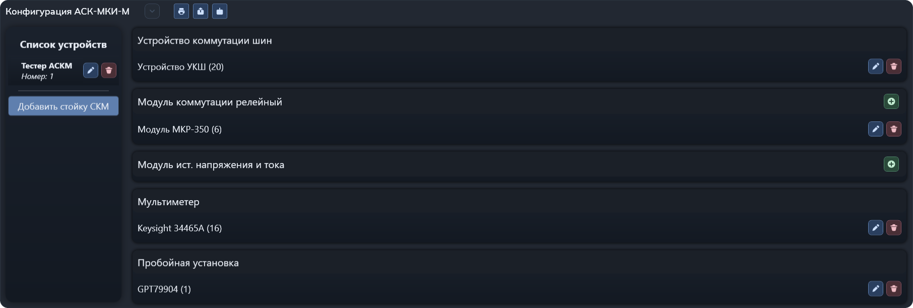
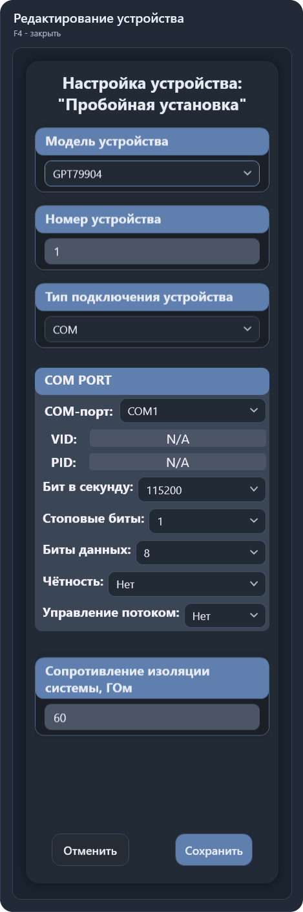

Конфигурация АСК-МКИ-М
Раздел «Настройки → Конфигурация АСК-МКИ-М» описывает состав оборудования, используемого приложением: тестеры, устройства коммутации, измерители и другие подключённые модули.
Раскройте секцию стрелкой рядом с заголовком. Слева отображается список устройств верхнего уровня; выбор тестера показывает справа его оборудование. Повторное нажатие на выбранный тестер сворачивает список.

Состав оборудования
В правой части устройства сгруппированы по назначению:
- Устройство коммутации шин.
- Модуль коммутации релейный.
- Модуль источника напряжения и тока.
- Мультиметр.
- Пробойная установка.
- Источник бесперебойного питания.
В строке устройства указаны модель и номер. Кнопка с плюсом добавляет устройство соответствующей группы, карандаш открывает редактирование, корзина удаляет запись из конфигурации.
Для устройства коммутации шин, мультиметра, пробойной установки и бесперебойника предусмотрено по одному устройству каждого типа в списке выбранного тестера: после добавления кнопка плюса для такой группы скрывается.
Добавление и изменение
- Выберите тестер в списке слева. При необходимости добавьте стойку или измените параметры тестера.
- Нажмите плюс нужной группы либо карандаш существующего устройства.
- В открывшейся боковой панели выберите модель, задайте номер и тип подключения.
- Заполните параметры связи и дополнительные поля выбранной модели.
- Нажмите «Сохранить». После успешного сохранения панель закрывается, а список оборудования обновляется.
При ошибках ввода приложение показывает сообщение и выделяет проблемные поля. Если запись с конфликтующими параметрами уже существует, сохранение завершается сообщением об ошибке.
«Отменить» закрывает форму без сохранения введённых изменений. Боковую панель также можно закрыть клавишей F4.
Параметры устройства
| Поле | Назначение |
|---|---|
| Модель устройства | Определяет поддерживаемые способы связи и дополнительные параметры формы. |
| Номер устройства | Номер, используемый для обращения к устройству в конфигурации. Указывайте его в соответствии с фактическим оборудованием. |
| Тип подключения устройства | IP, COM или USB — из поддерживаемых выбранной моделью вариантов. |
| Параметры IP | IP-адрес устройства. |
| Параметры COM | COM-порт, скорость, стоповые биты, биты данных, чётность и управление потоком. VID и PID отображают сведения о подключённом устройстве; N/A означает отсутствие этих сведений. |
| Параметры USB | Выбор доступного USB-устройства и его идентификационные сведения. |
| Дополнительные параметры | Зависят от типа устройства: например, структурная шина, количество точек, сопротивление и ёмкость коммутатора. |

Для пробойной установки задаётся «Сопротивление изоляции системы, ГОм». Допустимые значения — от 1 до 60 ГОм включительно. На примере указано 60 ГОм. Это параметр конфигурации установки, а не минимальное сопротивление для отдельного теста СИ.
Удаление
Корзина удаляет запись устройства из конфигурации. Удаление тестера также удаляет связанные с его номером шасси записи оборудования. Перед удалением проверьте выбранную строку; для резервной копии используйте экспорт конфигурации.
Печать, экспорт и импорт
| Кнопка у заголовка | Действие |
|---|---|
| Печать активной конфигурации | Формирует документ с текущим составом оборудования для печати. |
| Экспорт конфигурации в JSON | Предлагает выбрать имя и папку JSON-файла, затем сохраняет в него конфигурацию оборудования. |
| Импорт конфигурации из JSON | Предлагает выбрать файл и подтвердить замену. После успешного импорта обновляет список оборудования. |
Импорт полностью заменяет текущую конфигурацию оборудования, а не добавляет устройства к существующим. Перед импортом сохраните резервную копию через экспорт. При отказе от подтверждения замена не выполняется. Ошибки формата и проверки файла выводятся сообщением.
Доступность
Изменять, добавлять и удалять оборудование, а также импортировать JSON может администратор. Для разработчика ПК и регулировщика доступны просмотр, печать и экспорт; кнопки редактирования и импорта скрыты.